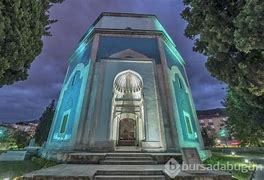
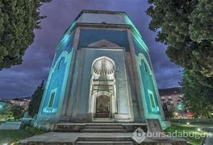
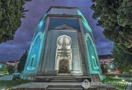
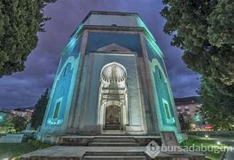

Bursa, Osmanlı Devleti’nin ilk başkentlerinden biridir ve doğal güzellikleriyle ünlüdür.
Bursa’nın Tarihçesi Bursa, tarihi M.Ö. 5. yüzyıla kadar uzanan bir geçmişe sahiptir. Ancak, şehir adını ilk kez Roma İmparatorluğu döneminde almıştır. Bursa, Roma döneminde önemli bir ticaret merkeziydi ve aynı zamanda güçlü bir askeri üssü olarak kullanılmıştır. Orta Çağ döneminde, Bursa Bizans İmparatorluğu’nun bir parçası haline geldi. Şehir, 1075 yılında Türklerin eline geçti ve Türk-İslam kültürünün etkisi altına girdi. Osmanlı İmparatorluğu’nun kurucusu Osman Gazi, 1326 yılında Bursa’yı fethetti ve şehir Osmanlı İmparatorluğu’nun ilk başkenti haline geldi. Osmanlı İmparatorluğu döneminde Bursa, ekonomik ve kültürel açıdan önemli bir şehir haline geldi. İpek ticareti, Bursa’nın en önemli ekonomik faaliyetlerinden biriydi ve şehirde birçok ipek fabrikası bulunuyordu. Aynı zamanda, Osmanlı İmparatorluğu’nun ilk dönemlerinde İslam medeniyeti de Bursa’da gelişti ve şehirde birçok cami, medrese ve türbe inşa edildi.